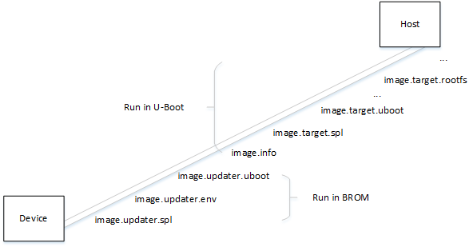

AICUPG 烧录
ArtInChip 平台支持通过 USB 进行裸机烧录的功能。通常情况下，该功能在 BROM 阶段通过检测特定按键的方式，或者启动失败时进入。
完整的升级过程分为两个阶段：
- BROM 阶段
仅支持下载数据和组件到 SRAM/DRAM，以及执行下载的组件。不支持烧录组件到存储介质。
- U-Boot 阶段
支持从主机端下载数据和组件，并且支持将组件烧录到指定的存储介质。
- 下载 SPL 组件到 SRAM 并执行，对 DRAM 进行初始化。
- 下载 U-Boot 到 DRAM 并执行。
- 进入 U-Boot AICUPG 升级模式。
-
U-Boot 中，使用下列方式可进入升级模式：
-
使用用于镜像升级的命令
aicupg，手动进入升级模式。源码实现位于
cmd/aicupg.c文件中。 -
在 env.txt 启动脚本中通过检测启动设备信息，在启动过程中主动进入升级模式。
-
- 执行下列命令开始 USB
升级初始化：
aicupg usb 0通过注册添加 Gadget 到系统之后，即可循环检查和处理 USB 数据。do_aicupg(); // cmd/aicupg.c |-> do_usb_protocol_upg(intf); // cmd/aicupg.c |-> usb_gadget_initialize(intf); // drivers/usb/gadget/udc/udc-uclass.c |-> g_dnl_register("usb_dnl_aicupg"); // drivers/usb/gadget/g_dnl.c | | // 接下进入循环，不停调用下面的函数进行数据处理 |-> usb_gadget_handle_interrupts(intf);此处注册的 usb_dnl_aicupg即为 f_aicupgusb.c 中实现的 Gadget。
关于 Gadget 的详细说明，可查看 Gadget 实现。
- 使用镜像升级命令，按组件发送的顺序将镜像文件中的组件逐个发送给设备端：注：主机端在制作用于烧录的镜像时，根据 image_cfg.json 的配置，为每一个组件生成 meta 信息，然后按照 image_cfg.json 中的顺序将组件打包为一个镜像文件。
图 1. 组件发送的顺序 - 进入 U-Boot 烧录阶段，U-Boot 将按照下列流程完成烧录。
- 获取关于升级镜像的基本信息。
一个平台可能支持多个存储介质。升级开始时，平台端首先需要知道本次升级需要烧录的目标存储介质， 这样 U-Boot 才能提前做好相应驱动的初始化。
此阶段，U-Boot 通过接收和解析名为 image.info 的组件数据，来获取本次升级要烧录的存储介质信息。 下面是交互过程中 SEND_FWC_DATA 的写数据流程:aicupg_data_packet_write(data, len); | // arch/arm/mach-artinchip/aicupg/upg_main.c |-> cmd = get_current_command(); |-> CMD_SEND_FWC_DATA_write_input_data(); | // arch/arm/mach-artinchip/aicupg/fwc_cmd.c |-> ram_fwc_data_write(fwc, buf, len); // arch/arm/mach-artinchip/aicupg/ram_fwc.c - 下载和烧录所有的组件。主机按顺序发送组件数据，U-Boot 将数据烧录到指定的分区/位置。此阶段中，U-Boot 接收组件数据，并且烧录到具体的存储介质。以 NAND 为例，数据接收流程如下：
aicupg_data_packet_write(data, len); | // arch/arm/mach-artinchip/aicupg/upg_main.c |-> cmd = get_current_command(); |-> CMD_SEND_FWC_DATA_write_input_data(); | // arch/arm/mach-artinchip/aicupg/fwc_cmd.c |-> nand_fwc_data_write(fwc, buf, len); | // arch/arm/mach-artinchip/aicupg/nand_fwc.c |-> nand_fwc_mtd_writer(fwc, buf, len); |-> mtd_write(mtd, offs, len, &retlen, buf);
关于 U-Boot 的具体功能介绍，可查看U-Boot章节。
- 获取关于升级镜像的基本信息。
-
打包镜像。
在打包镜像前，确保 target/<IC>/<Board>/image_cfg.json 文件中的 device_id 与存储介质所使用的控制器 id 保持一致。例如，在 eMMC 存储介质中，使用的控制器为 SDMC0，则应该将 device_id 的值设为 0。 如果 eMMC 存储介质所使用的控制器为 SDMC1，则应该将 device_id 设为 1。
基本协议
AICUPG 镜像升级和烧录功能使用自定义的通信协议，该通信协议基于 USB Bulk 传输进行了自定义扩展。
从协议层次架构上看，通信协议分为：
-
传输层
USB Bulk 传输协议仅定义了 Bulk 传输的基本行为和数据格式，其他具体应用协议可以在其基础之上进行扩展。
AICUPG 的传输层对 USB Bulk 的 CBW(Command Block Wrapper) 中自定义的命令数据块 (Command Block) 部分进行了扩展定义，实现了 WRITE/READ 两个基本操作命令，具体如中CBW 扩展定义的
bCommand所示。WRITE 操作用于主机发送数据包，READ 操作用于主机读取数据包。 每个数据包的最大长度为 4KB。 -
应用层
AICUPG 应用层协议中，对
CMD HEADER和RESP HEADER定义，具体见 CMD HEADER 数据格式。应用层协议还定义了用于镜像升级的命令，具体见镜像升级所用的命令。

| 域 | 字节 | 说明 |
|---|---|---|
| dCBWSignature | 0 ~ 3 | 魔数，标识 CBW 数据包，值为 “USBC” |
| dCBWTag | 4 ~ 7 | CBW 包的编号 |
| dCBWDataTransferLength | 8 ~ 11 | CBW 之后紧跟的传输数据长度 |
| bmCBWFlags | 12 |
0x00：数据传输方向为主机到设备 0x80：数据传输方向为设备到主机 |
| bCBWLUN | 13 | 没有使用，可忽略 |
| bCBWCBLength | 14 | CBW 命令块有效长度，这里固定为 0x01 |
| bCommand | 15 |
0x01: WRITE 表示写操作 0x02: READ 表示读操作 |
| Reserved | 16 ~ 30 |
| 域 | 字节 | 说明 |
|---|---|---|
| dMagic | 0 ~ 3 | 魔数，值为 “UPGC” |
| bProtocol | 4 |
自定义协议类型 0x01: USB 升级协议 |
| bVersion | 5 |
自定义协议的版本 0x01: Version 1 |
| bCommand | 6 | 命令控制字 |
| Reserved | 7 | |
| dDataLength | 8 ~ 11 | CMD HEADER 之后传输给设备的数据长度 |
| dCheckSum | 12 ~ 15 | CMD HEADER 前 12 字节 32-bit Checksum |
| 域 | 字节 | 说明 |
|---|---|---|
| dMagic | 0 ~ 3 | 魔数，值为 “UPGR” |
| bProtocol | 4 |
自定义协议类型 0x01: USB 升级协议 |
| bVersion | 5 |
自定义协议的版本 0x01: Version 1 |
| bRespCommand | 6 | 所响应的命令 |
| bStatus | 7 |
命令执行状态 0x00: OK 0x01: Failed |
| dDataLength | 8 ~ 11 | RESP HEADER 之后传输的数据长度 |
| dCheckSum | 12 ~ 15 | RESP HEADER 前 12 字节 32-bit Checksum |
| 命令 | 值 | 说明 |
|---|---|---|
| GET_HWINFO | 0x00 | 获取硬件相关信息 |
| SET_FWC_META | 0x10 | 发送组件(Firmware Component)的描述信息 |
| GET_BLOCK_SIZE | 0x11 | 获取传输的数据块大小， 发送的有效数据须以该块大小为单位 |
| SEND_FWC_DATA | 0x12 | 发送组件数据 |
| GET_FWC_CRC | 0x13 | 获取设备端对所接收数据计算的 CRC 值， 以确认传输是否出错 |
| GET_FWC_BURN_RESULT | 0x14 | 获取组件烧录后，设备端的校验结果 |
| GET_FWC_RUN_RESULT | 0x15 | 获取组件在运行之后的返回结果 |
Gadget 实现
USB 升级过程中，平台端是一个 USB 设备，因此在 U-Boot 中需要实现对应的 Gadget， 在 Gadget 中实现对相应的 USB 命令进行处理。
U-Boot 的 USB 驱动框架支持实现自定义的 Gadget 设备，只需按照框架定义的方式实现相应函数， 并且提供相应的描述符信息即可。
- Gadget
设备通过下面的宏进行声明：
DECLARE_GADGET_BIND_CALLBACK(usb_dnl_aicupg,aicupg_add);
-
Gadget 描述符中相关的 Vendor ID 和 Product Number 则由 Kconfig 配置：
-
CONFIG_USB_GADGET_VENDOR_NUM
0x33C3ArtInChip 的专有 Vendor ID。 -
CONFIG_USB_GADGET_PRODUCT_NUM
0x6677字符串 “fw” 的 ASCII 码值，表示专门用于镜像升级的 ID。
-
-
Gadget 实现的接口函数：
f_upg->usb_function.name = "f_aicupg"; f_upg->usb_function.bind = aicupg_bind; f_upg->usb_function.unbind = aicupg_unbind; f_upg->usb_function.set_alt = aicupg_set_alt; f_upg->usb_function.disable = aicupg_disable; f_upg->usb_function.strings = aicupg_strings; - Gadget 层 USB 数据输入输出函数：具体命令的处理代码位于 arch/arm/mach-artinchip/aicupg。
void aicupg_trans_layer_read_pkt(struct usb_ep *in_ep, struct usb_request *in_req); void aicupg_trans_layer_write_pkt(struct usb_ep *out_ep, struct usb_request *out_req); -
Gadget 层通过下面的接口与
aicupg库进行交互：s32 aicupg_data_packet_read(u8 *data, s32 len); s32 aicupg_data_packet_write(u8 *data, s32 len);